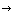

Upsilon Scans and Lepton Widths
- FORMERLY -
Line shapes and Gamma_ee for the Upsilon Resonances
- Interested Parties
- Run Info (includes 120790 - 123718)
- Categorization of runs into peak, scan and continuum, with relevant statistics.
- Now has plots of stability and preliminary peaks in the margins.
- Jump to:
- 11/29/01 Y(3s) scan (generic first attempt)
- 12/06/01 Y(3s) scan (generic)
- 12/13/01 Y(3s) scan (more data at neck)
- 12/20/01 Y(3s) scan (more data at neck)
- 12/25/01 Y(3s) scan (triple data with high energy point)
- 01/03/02 Y(3s) scan (more data at neck)
- 01/10/02 Y(3s) scan (more data at neck)
- 01/16/02 Y(1s) scan (generic first attempt)
- 01/30/02 Y(1s) scan (generic)
- Weekly Scan Fits
- Plots and fit parameters for each night of scanning.
- online - raw hadronic cross-section taken from online statistics database
- pass1 - raw hadronic cross-section taken from offline pass1 processing (no tracking)
- JS - Jackson-Sharre
analytic distribution used as the fitting function
- 1s Resonance
- 2s Resonance
- 3s Resonance
- Thursday, November 29, 2001: pass1 JS
- Thursday, December 6, 2001: pass1 JS
- Thursday, December 13, 2001: pass1 JS
- Thursday, December 20, 2001: pass1 JS
- Tuesday, December 25, 2001 (Includes Dec 27 high-energy tail point!):
pass1 JS
- Thursday, January 3, 2002: pass1 JS
- Thursday, January 10, 2002: pass1 JS
- Data Summaries and Leptonic Width Determination
- Data from all weeks are combined to get a single value for the resonance area.
- 1s Resonance
- 2s Resonance
- 3s Resonance
Best value yet: e+ e-
 Y(3s) hadrons =
0.4052
 0.0027 (STATISTICAL)
0.0027 (STATISTICAL)
- Talks and Presentations
- These reproduce data given above in a shortened form.
 Jim Pivarski <mccann@mail.lns.cornell.edu>
Last Modified: Monday, February 4, 2002.
Jim Pivarski <mccann@mail.lns.cornell.edu>
Last Modified: Monday, February 4, 2002.